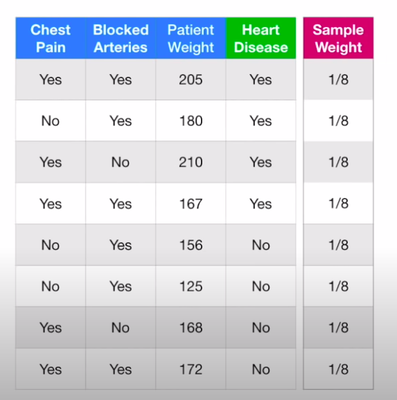
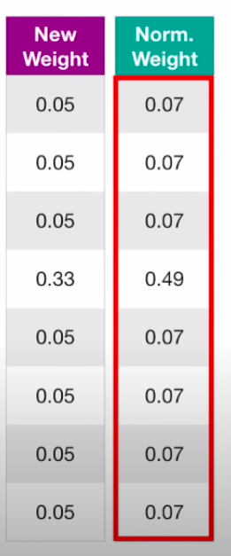

§ MALIS: AdaBoost
Learners can be considered weak or strong as follows:
- Weak → Error Rate is only slightly better than random
- Strong → Error Rate highly correlated with the actual classification
Adaboost combines a lot of weak learners to create a strong classifier!. This is characterized by 3 key points:
- It creates an RF of stumps → trees with only one question used for classification → which act as weak learners
- All stumps in this forest don't have equal say, some have more and some have less and they are used as weights for the classification that each stump makes
- The errors made by the previous stumps are taken into account by the next stump to reduce misclassification i.e the stumps sequentially try to reduce misclassification in contrast to a vanilla RF where the stumps are all separate
The steps are a follows:
- Start with the dataset, but assign each data point a weight i.e create a new column with weights, which have to be normalized, and at the start, all have equal values

- Use a weighted impurity to classify nodes → We use the same formula, but for each label we use the associated weights in the gini calculation. Since all weights are the same, we ignore them for now and see that the gini for patient weight is the lowest, so we use it for our first stump:
- Now we see how many errors this stump made → in this case it is 1. We determine the say of this stump by summing the weights of the erroneously classified samples → E=∑Wi → and the total say as S=21log(E1−E) → we get the say as 0.47 for this stump
- Now we update the weight of the incorrectly classified sample using the formula: w←w∗eS and so, we get the new weight for the incorrect sample as
- Now we will decrease the amount of weights for all the correctly classified samples by using the formula : w←w∗e−S which gives us the new weights of all other labels as 0.05
- Now we normalize the updated weight by dividing each weight by the sum all weights

- We repeat the procedure using a weighted gini index or just creating duplicates of the samples with the large weights.
The main thing that characterizes this algorithm is Boosting, which is a fancy name for when we train multiple weak classifiers to create a stringer classifier by taking errors of the previous classifiers into account. AdaBoost is creating a forest of stumps, but each new stumps uses the normalized weights to determine which kind of mis-classifications to focus on and thus, in a sense, uses the errors of the previous stumps to improve.